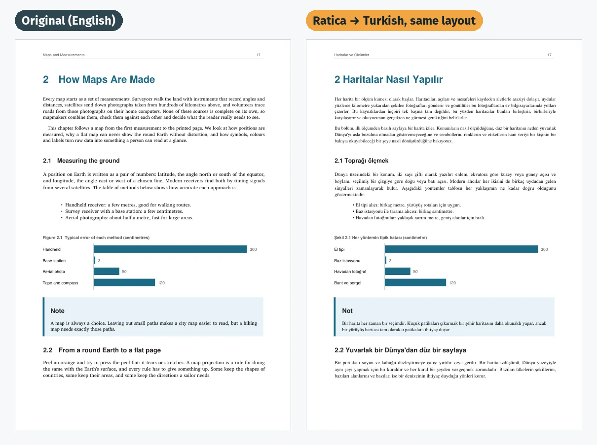

Translate PDF books with local AI
Ratica translates whole PDF books on your own computer and writes the translation back into the original pages. Private, offline, free and open source.
Beta · Windows, macOS (Apple Silicon) and Linux

How it works
Open a PDF
Choose a book or drop it on the window. Ratica recognises the language it is written in.
Pick a language
Choose one of 23 languages and press Translate. You can pause and resume at any time.
Get the translated book
A PDF with the same layout as the original, and an EPUB for e-readers, saved next to your PDF.
Why local
Private
Everything runs on your computer. Ratica never uploads your files or text.
No subscription, no API key
No account and no per-page cost. The AI model runs on your own GPU.
Works offline
Ratica goes online once, on first start, to download its engine and model (about 5–6 GB). After that it works offline.
Keeps the layout
Headings, tables of contents, lists, figures, colours and formulas stay where they were. Code, URLs and formulas are left unchanged.
Download
Free. Get the latest release for your system from GitHub.
macOS
Apple Silicon (M1 or newer), macOS 12 or newer. Signed and notarized by Apple.
Download for macOSWindows
Windows 10/11. The installer is not code-signed yet, so Windows may show a warning: choose More info → Run anyway.
Download for WindowsLinux
x64, as a .tar.gz archive.
System requirements
| Hardware | Support |
|---|---|
| NVIDIA GPU with 6 GB or more | Recommended (CUDA) |
| Apple Silicon Mac (M1 or newer) | Supported (Metal) |
| AMD or Intel GPU | Should work (Vulkan), not yet tested |
| No GPU | Works, but slow |
About 6 GB of free disk space for the engine and the model. On an entry-level 6 GB GPU, a 200-page book takes about 30–45 minutes.
Open source
Ratica is free software under the AGPL-3.0 license. It is built with llama.cpp, the Gemma-4-E4B-it model, PyMuPDF and PySide6.
Help is welcome, especially hardware reports from AMD, Intel and Apple GPUs and feedback on translation quality in any language.